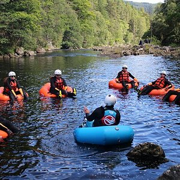
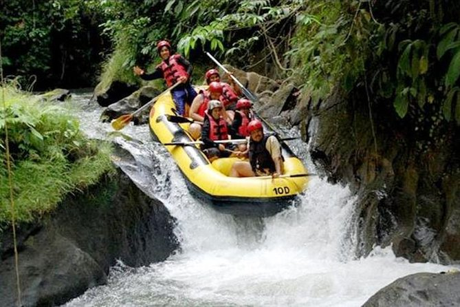
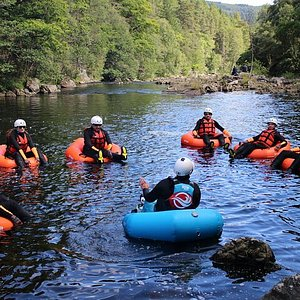
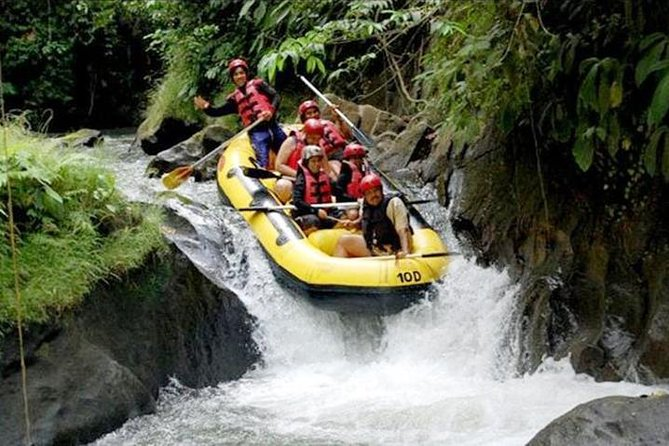

Purpose

Our purpose is to share the thrill of Mukungwa River white water rafting. Our mission is to provide safe, unforgettable adventures. We believe in excitement, natural beauty, and lasting memories. Come, raft with us!

Our purpose is to share the thrill of Mukungwa River white water rafting. Our mission is to provide safe, unforgettable adventures. We believe in excitement, natural beauty, and lasting memories. Come, raft with us!
Founded in 2023, A Thousand Hills White Water Rafting Company emerged from a deep passion for Rwanda's natural beauty and the thrill of river adventures. Our founders, a team of experienced rafters and local conservationists, envisioned sharing the exhilarating rapids of the Mukungwa River with the world. Starting with just a few rafts and a big dream, we quickly grew, driven by our commitment to safety, sustainable tourism, and creating unforgettable experiences. Today, we're proud to be a premier adventure operator, inviting you to discover Rwanda's wild heart.
 


